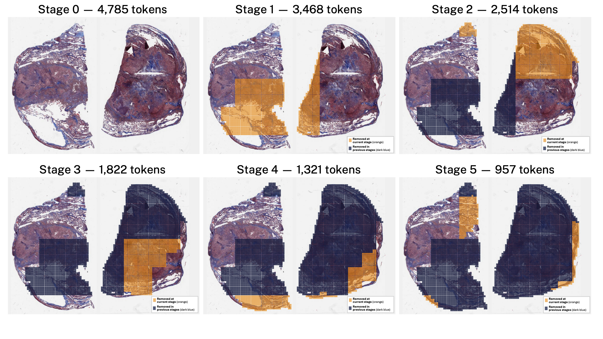
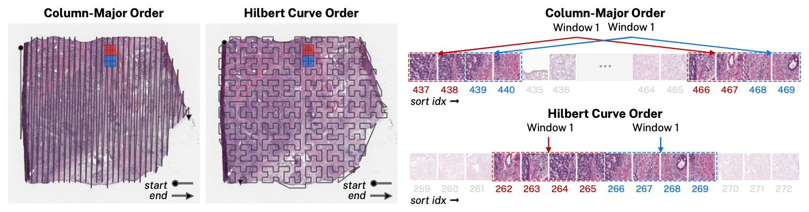
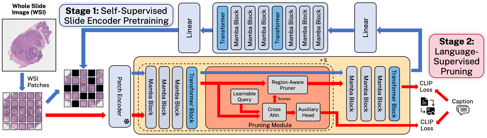

SLICEChat: Progressive In-Encoder Token Pruning for Whole-Slide Pathology Language Models
Abstract
Whole-slide pathology images (WSIs) contain gigapixel-scale visual content, creating a major scalability challenge for slide-level multimodal large language models (MLLMs). Existing approaches process thousands of patch tokens and typically apply compression only after slide encoding, leaving multimodal attention computationally expensive. We introduce SLICEChat, a slide-level MLLM that integrates progressive token pruning within a hybrid Mamba–Transformer slide encoder. Mamba layers enable efficient long-range propagation, while Transformer layers preserve global interactions as the sequence is progressively shortened. Between stages, language-supervised, region-aware pruning removes spatially coherent low-utility regions under a controlled keep-rate schedule, producing compact slide representations before multimodal fusion. On SlideBench VQA, SLICEChat achieves 79.84% accuracy on TCGA and 59.09% on BCNB cohorts, outperforming the evaluated prior slide-level pathology MLLMs in overall accuracy. It also achieves the highest overall WSI-Precision and WSI-Relevance on WSI-Bench, with competitive memory usage and the second-lowest inference latency among the evaluated models. These results demonstrate accurate and computationally efficient multimodal reasoning over gigapixel WSIs.
Progressive In-Encoder Token Pruning
A compact slide representation, built progressively from thousands of tissue patches.
Hybrid slide encoding
We use CONCH v1.5 the patch encoder. In the slide encoder, each hybrid stage combines three Vision Mamba blocks with a Transformer block, pairing efficient long-range propagation with global attention.
Learned region selection
Language-supervised routers score contextualized tokens between encoder stages. Five pruning modules progressively remove low-scoring, spatially coherent regions to reach a controlled token budget.
Spatially aware reasoning
A two-layer MLP projects retained tokens into Qwen2.5-VL-7B. Original patch coordinates are preserved through M-RoPE, maintaining spatial relationships during multimodal fusion.

Preserving tissue neighborhoods
Irregular tissue boundaries can make contiguous raster windows span disconnected strips. Hilbert indexing keeps nearby patches close in a temporary pruning sequence, producing compact candidate regions. The router removes the lowest-scoring window.
{kind=link}

Training SLICEChat
{kind=link}

Self-supervised pretraining
Learn slide representations from unlabeled TCGA slides using masked autoencoding. Pruning is disabled while the hybrid backbone learns long-range context.
Language-supervised pruning
Train the routing modules with slide–caption pairs and CLIP-style objectives. The slide backbone and PubMedBERT text encoder remain frozen.
Multimodal instruction tuning
Jointly train the projection layer and language model on slide captions and visual question answering examples, keeping the slide encoder frozen.
Results
Strong whole-slide understanding with a compact visual representation.
SlideBench VQA
SLICEChat achieves the highest overall accuracy on both TCGA and BCNB among the evaluated models. Slide-level models in this comparison are trained on SlideInstruct.
| Model | TCGA | BCNB | |||
|---|---|---|---|---|---|
| Clinical | Diagnosis | Microscopy | Overall | ||
| SlideChat | 69.39 | 72.61 | 82.46 | 74.95 | 54.04 |
| HistoSelect | 80.61 | 74.12 | 81.68 | 76.51 | 53.24 |
| SLICEChat (ours) | 75.51 | 79.25 | 82.46 | 79.84 | 59.09 |
WSI-Bench
SLICEChat leads in overall WSI-Precision and WSI-Relevance. These models are trained on the WSI-Bench training set.
| Metric | Model | Diagnosis | Morphology analysis | Treatment planning | Report | Overall |
|---|---|---|---|---|---|---|
| WSI-Precision | WSI-LLaVA | 0.597 | 0.530 | 0.794 | 0.337 | 0.538 |
| HistoSelect | 0.560 | 0.516 | 0.718 | 0.326 | 0.518 | |
| SLICEChat (ours) | 0.672 | 0.594 | 0.790 | 0.470 | 0.607 | |
| WSI-Relevance | WSI-LLaVA | 0.822 | 0.745 | 0.866 | 0.678 | 0.760 |
| HistoSelect | 0.816 | 0.743 | 0.823 | 0.679 | 0.756 | |
| SLICEChat (ours) | 0.845 | 0.757 | 0.889 | 0.717 | 0.776 |
Computational Efficiency
On a typical whole-slide input with 11,948 patches, SLICEChat has the second-lowest latency and peak memory consumption among the compared models.
| Model | Peak memory (GiB) | Latency (ms) |
|---|---|---|
| SlideChat | 16.560 | 2,405 |
| WSI-LLaVA | 15.048 | 1,775 |
| HistoSelect | 18.604 | 3,048 |
| SLICEChat (ours) | 15.054 | 2,001 |
The comparison uses inputs with equal patch counts. WSI-LLaVA and HistoSelect preprocessing components were integrated into their respective end-to-end evaluation pipelines. Running the original repositories without this integration would result in significantly higher latency.
BibTeX
@misc{bozkurt2026slicechatprogressiveinencodertoken,
title={SLICEChat: Progressive In-Encoder Token Pruning for Whole-Slide Pathology Language Models},
author={Ali Kerem Bozkurt and Baris Cem Bakay and Ibrahim Kulac and Cigdem Gunduz-Demir and Erkut Erdem and Aykut Erdem},
year={2026},
eprint={2609.24894},
archivePrefix={arXiv},
primaryClass={cs.CV},
url={https://arxiv.org/abs/2609.24894},
}